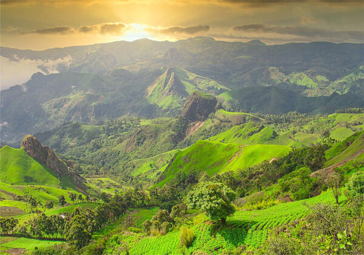
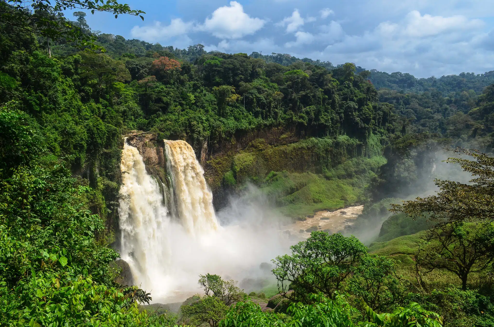
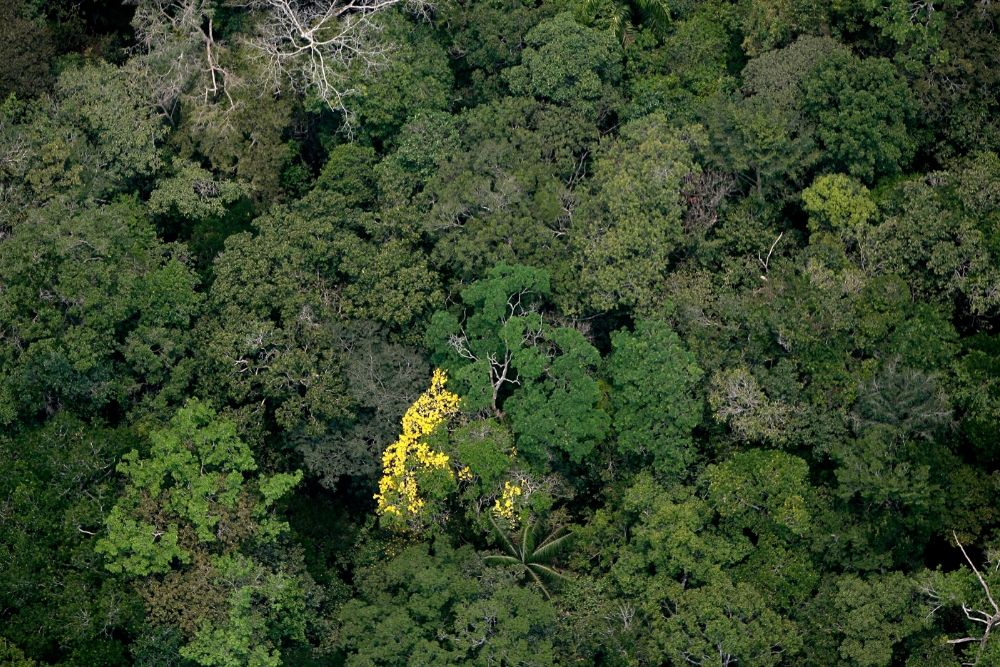
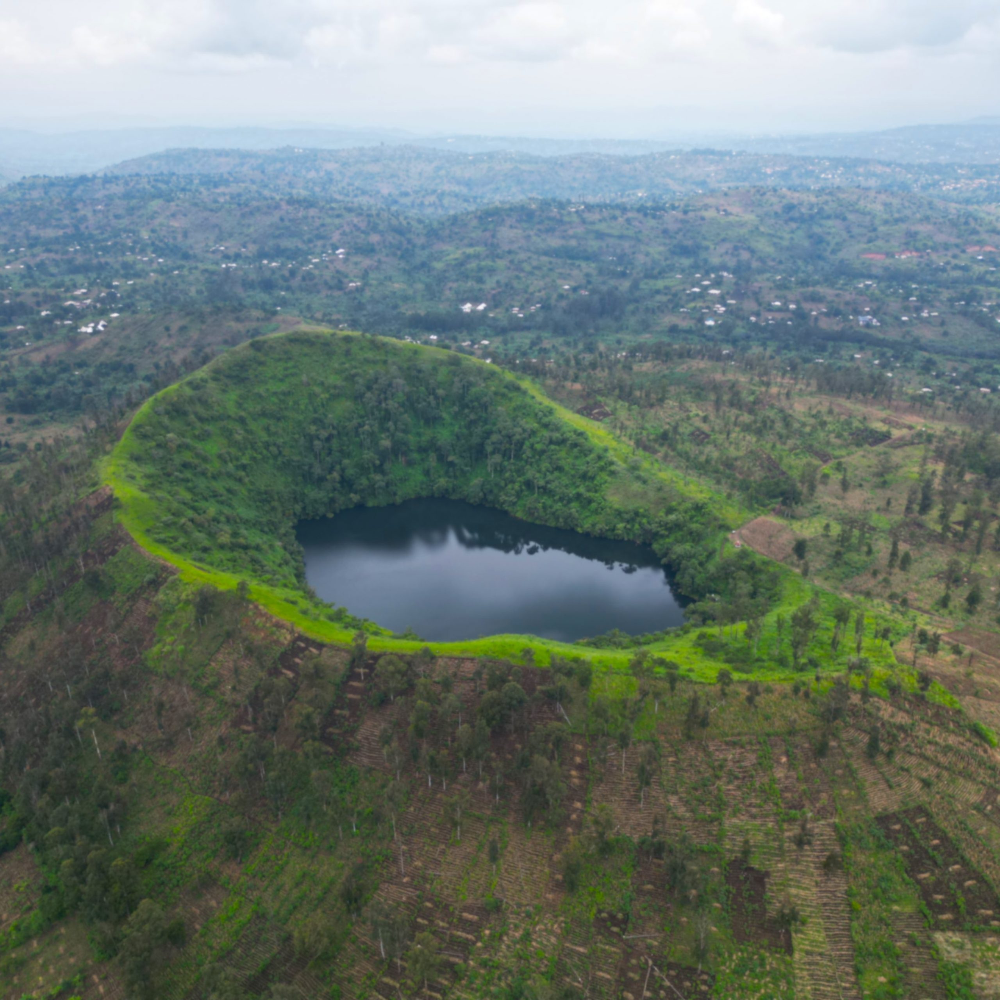
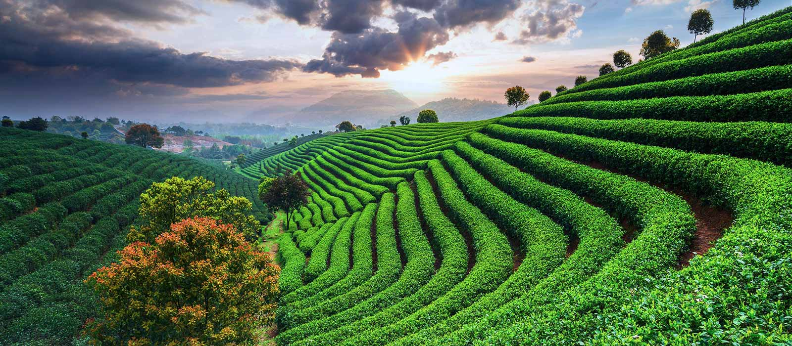

Découverte
Les plus beaux paysages de l'Ouest
Explorez la diversité géographique des Grassfields. Des montagnes verdoyantes des Bamboutos aux cascades mystiques, la terre bamiléké offre un spectacle naturel à couper le souffle, riche en histoire et en spiritualité.




